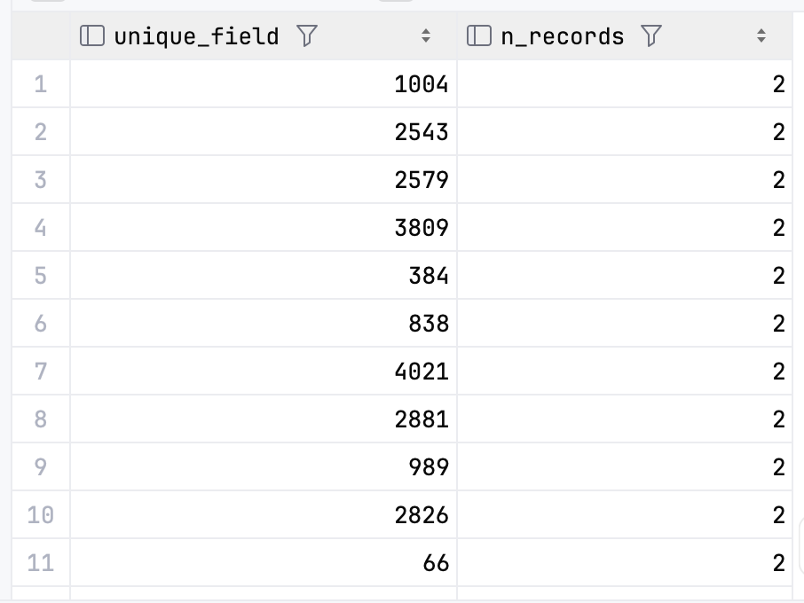

In the world of modern data analytics, ensuring data quality is paramount. As organizations increasingly rely on data to drive decision-making, the integrity and reliability of that data become critical success factors. This is where dbt (data build tool) shines as a powerful ally in maintaining data quality throughout your analytics workflow.
Introduction
Data quality issues can silently undermine business intelligence efforts, leading to flawed analyses and poor decision-making. Whether it’s duplicate records, null values in critical fields, or inconsistent data relationships, these problems must be identified and addressed before data reaches end-users.
dbt has revolutionized how data teams approach testing by integrating quality checks directly into the data transformation process. In this article, we’ll explore how to leverage dbt’s testing capabilities to ensure your data remains trustworthy and reliable, starting with essential checks and progressing to advanced testing strategies.
The Fundamentals: dbt’s Core Tests
dbt comes with four built-in tests that form the foundation of data quality validation:
1. Unique Tests
The unique test verifies that a column or combination of columns contains no duplicate values. This is essential for primary keys and other fields where duplicates would indicate data quality issues.
Real-world use case: Consider a orders table where each order should have a unique identifier:
version: 2
models:
- name: orders
columns:
- name: order_id
data_tests:
- uniqueWhen would this fail? Let’s imagine an e-commerce system where a synchronization error caused the same order to be recorded twice. The unique test would immediately flag this issue, preventing downstream analytics from double-counting revenue or order volume.
When you execute dbt test command you would find an error that looks like this
15:12:02 Found 4 seeds, 1 model, 1 test, 4 sources, 433 macros
15:12:02
15:12:02 Concurrency: 1 threads (target='dev')
15:12:02
15:12:02 1 of 1 START test unique_stg_orders_order_id ................................... [RUN]
15:12:02 1 of 1 FAIL 60 unique_stg_orders_order_id ...................................... [FAIL 60 in 0.03s]
15:12:02
15:12:02 Finished running 1 test in 0 hours 0 minutes and 0.15 seconds (0.15s).
15:12:02
15:12:02 Completed with 1 error, 0 partial successes, and 0 warnings:
15:12:02
15:12:02 Failure in test unique_stg_orders_order_id (models/staging/_staging_models.yml)
15:12:02 Got 60 results, configured to fail if != 0
15:12:02
15:12:02 compiled code at target/compiled/dbt_testing_project/models/staging/_staging_models.yml/unique_stg_orders_order_id.sql
15:12:02
15:12:02 Done. PASS=0 WARN=0 ERROR=1 SKIP=0 TOTAL=1You can open the compiled sql (in the target/compiled folder) and you can execute it in your database to identify the problematic rows
select
order_id as unique_field,
count(*) as n_records
from "dbt_demo"."test"."stg_orders"
where order_id is not null
group by order_id
having count(*) > 1
2. Not Null Tests
The not_null test ensures that a column doesn’t contain any NULL values, which is crucial for required fields.
Real-world use case: In a customer database, certain fields might be mandatory:
version: 2
models:
- name: customers
columns:
- name: customer_id
data_tests:
- not_null
- name: email_address
data_tests:
- not_nullWhen would this fail? If your user registration process had a bug that allowed accounts to be created without capturing email addresses, this test would alert you to the missing data.
Compiled SQL:
select email
from "dbt_demo"."test"."stg_customers"
where email is null3. Accepted Values Tests
The accepted_values test validates that all values in a column fall within a predefined set of acceptable options.
Real-world use case: For a payment_status column that should only contain specific values:
version: 2
models:
- name: orders
columns:
- name: payment_status
data_tests:
- accepted_values:
values: ['pending', 'completed', 'failed', 'refunded']When would this fail? If a new payment gateway introduced a new status like ‘processing’ without proper documentation, this test would catch the unexpected value, prompting investigation.
Compiled SQL:
with all_values as (
select
payment_status as value_field,
count(*) as n_records
from "dbt_demo"."test"."stg_orders"
group by payment_status
)
select *
from all_values
where value_field not in (
'pending','completed','failed','refunded'
)4. Relationships Tests
The relationships test (also known as referential integrity) checks that values in a column exist in a column of another table, ensuring proper data relationships.
Real-world use case: Ensuring every order belongs to a valid customer:
version: 2
models:
- name: orders
columns:
- name: customer_id
data_tests:
- relationships:
to: ref('customers')
field: customer_idWhen would this fail? If an order record was created with a customer_id that doesn’t exist in the customers table, this could indicate an orphaned record or synchronization issue between systems.
Compiled SQL:
with child as (
select customer_id as from_field
from "dbt_demo"."test"."stg_orders"
where customer_id is not null
),
parent as (
select customer_id as to_field
from "dbt_demo"."test"."stg_customers"
)
select
from_field
from child
left join parent
on child.from_field = parent.to_field
where parent.to_field is nullTaking Testing Further: Custom Tests
While the core tests cover many common scenarios, real-world data quality needs often require custom validation logic. dbt offers two approaches to custom testing:
Singular Tests
Singular tests are SQL queries that return zero rows when the test passes. They’re ideal for one-off checks or complex validations specific to your business rules. You cannot pass any argument with these tests compared to generic tests that we’ll detail below.
Real-world use case: Ensuring the total order amounts match between summary and detail tables:
-- tests/assert_order_totals_match.sql
with order_summary as (
select sum(total_amount) as total
from {{ ref('stg_orders') }}
),
order_details as (
select sum(quantity * unit_price) as total
from {{ ref('stg_order_items') }}
)
select
'Mismatch between summary and detail totals' as failure_reason,
abs(order_summary.total - order_details.total) as total_difference
from order_summary
cross join order_details
where abs(order_summary.total - order_details.total) > 0.01When would this fail? If your summary tables are calculated differently than the detail tables, this could indicate a calculation error or missing data.
Compiled SQL:
-- tests/assert_order_totals_match.sql
with order_summary as (
select sum(total_amount) as total
from "dbt_demo"."test"."stg_orders"
),
order_details as (
select sum(quantity * unit_price) as total
from "dbt_demo"."test"."stg_order_items"
)
select
'Mismatch between summary and detail totals' as failure_reason,
abs(order_summary.total - order_details.total) as total_difference
from order_summary
cross join order_details
where abs(order_summary.total - order_details.total) > 0.01Generic Tests
Generic tests allow you to create reusable test logic that can be applied to multiple models. They’re defined just like macros that return SQL queries. You need to create generic tests in the following folder: tests/generic/
Real-world use case: A custom test to ensure date fields are not in the future:
-- tests/generic/test_not_future_date.sql
{% test date_not_future(model, column_name) %}
select
{{ column_name }} as problematic_date
from {{ model }}
where {{ column_name }} > now()
{% endtest %}Using it in your schema file:
version: 2
models:
- name: stg_orders
columns:
- name: order_date
data_tests:
- date_not_futureWhen would this fail? If your system accidentally recorded orders with tomorrow’s date, this would indicate a potential data entry error or time zone configuration issue.
Compiled SQL:
select
order_date as problematic_date
from "dbt_demo"."test"."stg_orders"
where order_date > now()Leveraging dbt Packages for Advanced Testing
The dbt ecosystem includes packages that extend its testing capabilities significantly. First, to install dbt packages you need to add these information in the packages.yml
package: it would be the name of the package (please refers to the documentation associated to the dbt packages)version: the version of the package (please make sure that the dbt package version is compatible with your dbt version)
When it’s added, you need to run dbt deps to install the package (re-run it after any modification).
In the end we would have a packages.yml that looks like this:
packages:
- package: dbt-labs/dbt_utils
version: 1.3.0dbt-utils: The Swiss Army Knife
The dbt-utils package provides additional generic tests, macros, and SQL helpers that complement dbt’s core functionality. Here the list of the generic tests included in dbt_utils:
equal_rowcountfewer_rows_thanequalityexpression_is_truerecencyat_least_onenot_constantnot_empty_stringcardinality_equalitynot_null_proportionnot_accepted_valuesrelationships_wheremutually_exclusive_rangessequential_valuesunique_combination_of_columnsaccepted_range
Real-world use case: Testing that I don’t have more order than I have order_items
version: 2
models:
- name: stg_orders
data_tests:
- dbt_utils.fewer_rows_than:
compare_model: ref('stg_order_items')Compiled SQL:
select
sum(coalesce(row_count_delta, 0)) as failures,
sum(coalesce(row_count_delta, 0)) != 0 as should_warn,
sum(coalesce(row_count_delta, 0)) != 0 as should_error
from
(
with
a as (
select
1 as id_dbtutils_test_fewer_rows_than, count(*) as count_our_model
from "dbt_demo"."test"."stg_orders"
group by id_dbtutils_test_fewer_rows_than
),
b as (
select
1 as id_dbtutils_test_fewer_rows_than,
count(*) as count_comparison_model
from "dbt_demo"."test"."stg_order_items"
group by id_dbtutils_test_fewer_rows_than
),
counts as (
select
a.id_dbtutils_test_fewer_rows_than
as id_dbtutils_test_fewer_rows_than_a,
b.id_dbtutils_test_fewer_rows_than
as id_dbtutils_test_fewer_rows_than_b,
count_our_model,
count_comparison_model
from a
full join
b
on a.id_dbtutils_test_fewer_rows_than
= b.id_dbtutils_test_fewer_rows_than
),
final as (
select
*,
case
-- fail the test if we have more rows than the reference model
-- and return the row count delta
when count_our_model > count_comparison_model
then (count_our_model - count_comparison_model)
-- fail the test if they are the same number
when count_our_model = count_comparison_model
then 1
-- pass the test if the delta is positive (i.e. return the
-- number 0)
else 0
end as row_count_delta
from counts
)
select *
from final
) dbt_internal_test
dbt-expectations: Statistical Validation
Inspired by Great Expectations, this package brings statistical and data quality expectations to dbt. In order to use this package I need to add in my packages.yml the following information
- package: metaplane/dbt_expectations
version: 0.10.8Real-world use case: Ensuring numeric values fall within an expected range:
version: 2
models:
- name: stg_products
columns:
- name: price
data_tests:
- dbt_expectations.expect_column_values_to_be_between:
min_value: 0
max_value: 10000
row_condition: "sale_price is not null"When would this fail? If a product was mistakenly priced at $10,000 instead of $100.00 due to a decimal place error, this test would catch the outlier.
Real-World Implementation: Comprehensive Testing Strategy
Let’s put everything together with a comprehensive example that demonstrates a robust testing strategy for an e-commerce dataset:
version: 2
models:
- name: stg_customers
description: "Cleaned customer records"
columns:
- name: customer_id
description: "Primary key"
data_tests:
- unique
- not_null
- name: email
description: "Customer email address"
data_tests:
- not_null
- dbt_expectations.expect_column_values_to_match_regex:
regex: '^[a-zA-Z0-9._%+-]+@[a-zA-Z0-9.-]+\.[a-zA-Z]{2,}$'
- name: signup_date
description: "Date when customer signed up"
data_tests:
- not_null
- date_not_future
- name: customer_type
description: "Type of customer account"
data_tests:
- accepted_values:
values: ['standard', 'premium', 'enterprise']
- name: stg_orders
description: "Order header information"
columns:
- name: order_id
description: "Primary key"
data_tests:
- unique
- not_null
- name: customer_id
description: "Foreign key to customers"
data_tests:
- not_null
- relationships:
to: ref('stg_customers')
field: customer_id
- name: order_date
description: "Date when order was placed"
data_tests:
- not_null
- date_not_future
- name: total_amount
description: "Total order amount"
data_tests:
- not_null
- dbt_expectations.expect_column_values_to_be_between:
min_value: 0
max_value: 50000
- name: stg_order_items
description: "Order line items"
columns:
- name: order_item_id
description: "Primary key"
data_tests:
- unique
- not_null
- name: order_id
description: "Foreign key to orders"
data_tests:
- not_null
- relationships:
to: ref('stg_orders')
field: order_id
- name: product_id
description: "Product identifier"
data_tests:
- not_null
- relationships:
to: ref('stg_products')
field: product_id
- name: quantity
description: "Quantity ordered"
data_tests:
- not_null
- dbt_expectations.expect_column_values_to_be_between:
min_value: 1
max_value: 100
- name: unit_price
description: "Price per unit"
data_tests:
- not_null
- dbt_expectations.expect_column_values_to_be_between:
min_value: 0
max_value: 10000Troubleshooting dbt Test Failures
Even with careful planning, test failures will occur. When they do, having a systematic approach to troubleshooting can save hours of investigation time. Here’s a comprehensive guide to diagnosing and resolving common dbt test failures:
Understanding Test Failure Output
When a test fails, dbt provides valuable information in its output:
1 of 42 FAIL 17 unique_orders_order_id ...................... [FAIL 17 in 2.37s]
This tells you:
- 17 rows failed the test
- The test name is
unique_orders_order_id - It took 2.37 seconds to run
Examining Failed Test SQL
The most important troubleshooting step is to examine the SQL that dbt generated:
- Find the compiled SQL:
# Path shown in the error message
target/compiled/your_project/schema_test/unique_orders_order_id.sql- Run the SQL directly in your database to see the failing rows
Common Failures and Solutions
Unique Tests Failing
Symptom: unique test on a primary key column fails
Diagnosis Steps:
- Run the compiled SQL to identify duplicate values
- Check if the duplicates share the same attributes or differ
- Look for patterns in timestamps or sources
Common Causes and Solutions:
- Data pipeline reprocessing: Implement idempotent loads with
mergeoperations - Missing deduplication logic: Add
qualify row_number() over(partition by id order by updated_at desc) = 1 - True duplicates from source: Implement upstream quality checks
Relationship Tests Failing
Symptom: relationships test fails between two tables
Diagnosis Steps:
- Find orphaned records using the compiled SQL
- Check if foreign keys are formatted consistently (case sensitivity, leading zeros)
- Verify timing of loads between parent-child tables
Common Causes and Solutions:
- Load order issues: Ensure parent tables load before child tables
- Data type mismatches: Add type casting in your models
- Stale references: Implement soft deletes instead of hard deletes
-- Example fix for inconsistent formatting
select
-- Standardize foreign key format to match parent
trim(upper(customer_id)) as customer_id
from raw_ordersAccepted Values Tests Failing
Symptom: accepted_values test fails with unexpected values
Diagnosis Steps:
- Run SQL to see unexpected values and their frequency
- Check if these are new valid values or errors
- Look for patterns (specific timeframes, sources)
Common Causes and Solutions:
- Legitimate new values: Update your test to include new values
- Casing issues: Add case normalization in the model
- Upstream changes: Implement alerting for schema changes
Custom Test Failures
Symptom: Complex custom tests failing in ways that are hard to interpret
Best Practices:
- Add descriptive error messages in your custom tests:
select
id,
amount,
'Order amount exceeds credit limit by ' ||
(amount - credit_limit) as failure_reason
from {{ ref('orders') }}
join {{ ref('customers') }} using (customer_id)
where amount > credit_limit- Use
store_failuresto persist failures for analysis:
- name: amount_within_credit_limit
data_tests:
- credit_limit_check:
store_failures: trueAdvanced Troubleshooting Techniques
Isolating Failures with Incremental Testing
If a test suddenly starts failing after passing previously:
- Find when the failure started:
# Test against data from yesterday
dbt test --select orders --vars '{"test_date": "current_date - interval 1 day"}'- Add conditional WHERE clauses to tests:
- unique:
where: "created_at > '2023-01-01'"Debugging Performance Issues
If tests are taking too long to run:
- Check execution plans for the compiled SQL
- Add appropriate indexes to commonly tested columns
- Sample data for development:
- unique:
where: "date_part('year', created_at) = date_part('year', current_date)"Creating a Test Debug Model
For complex tests that are hard to debug, create a temporary debug model:
-- models/debugging/failing_test_debug.sql
{{
config(
materialized = 'table'
)
}}
-- Insert test SQL here, but modify to include more context
select
orders.order_id,
orders.customer_id,
customers.customer_id as valid_customer_id,
orders.order_date
from {{ ref('orders') }}
left join {{ ref('customers') }} using (customer_id)
where customers.customer_id is nullBuilding a Testing Feedback Loop
Turn test failures into improvement opportunities:
- Document each resolved test failure in your team’s knowledge base
- Update models to prevent similar failures in the future
- Add new tests when you discover data quality issues
- Review test coverage regularly to identify gaps
By systematically addressing test failures, you not only fix immediate issues but also strengthen your data quality framework over time, leading to increased confidence in your data models.
Optimizing Test Performance
As your dbt project scales, you may notice test execution becomes slower, especially with many models and large datasets. Here’s how to optimize test performance without compromising quality:
1. Test Only What Matters
- Prioritize critical models (e.g., staging and marts).
- Avoid over-testing bronze/raw layers unless they’re business-critical.
- Use
tags:to group tests by importance and selectively run:
dbt test --select tag:criticalExpanded Test Selection Strategies
As your dbt project grows, running all tests on every execution becomes inefficient. Strategic test selection allows you to focus on what matters most in each context. Here are several powerful approaches:
Using Node Selection Syntax
dbt’s node selection syntax provides flexibility beyond simple tagging:
By Model Relationships
# Test current model and all upstream dependencies
dbt test --select orders+
# Test current model and all downstream dependents
dbt test --select +orders
# Test current model, its dependencies, and dependents
dbt test --select +orders+
# Test models exactly one hop away
dbt test --select 1+ordersBy File Changes
# Test only modified models since last production run
dbt test --select state:modified
# Test modified models and all downstream dependents
dbt test --select state:modified+
# Test only new models added since last production run
dbt test --select state:newUsing Tags Strategically
Structure your tags for maximum flexibility:
By Test Purpose
version: 2
models:
- name: orders
columns:
- name: order_id
data_tests:
- unique:
tags: ['primary_key', 'critical']
- name: customer_id
data_tests:
- relationships:
to: ref('customers')
field: customer_id
tags: ['referential_integrity', 'high']Execution examples:
# Run only primary key tests
dbt test --select tag:primary_key
# Run all critical tests across the project
dbt test --select tag:critical
# Exclude specific test categories
dbt test --exclude tag:slowBy Business Domain
version: 2
models:
- name: orders
tags: ['sales', 'transaction']
columns:
- name: order_id
data_tests:
- uniqueExecution:
# Test only sales domain models
dbt test --select tag:sales
# Combine multiple domains
dbt test --select tag:sales,tag:marketingTest Execution Frequency Strategies
Not all tests need to run at the same cadence:
- CI Pipeline Tests: Critical integrity tests for changed models
dbt test --select state:modified+ tag:critical- Daily Tests: All standard tests across the warehouse
dbt test --exclude tag:weekly,tag:monthly- Weekly Tests: More intensive tests that take longer to run
dbt test --select tag:weekly- Monthly Tests: Deep data quality checks
dbt test --select tag:monthlyBy combining these selection methods, you can create a tiered testing strategy that balances thoroughness with execution time, ensuring critical tests always run while more intensive checks happen at appropriate intervals.
2. Change the Severity of Your Tests
By default the severity of the test is set to error, but instead of fails you can set a warning and add conditions on them:
version: 2
models:
- name: large_table
columns:
- name: slightly_unreliable_column
tests:
- unique:
config:
severity: error
error_if: ">1000"
warn_if: ">10"3. Use where: Clauses in Tests
Limit tests to a subset of data using where: filters:
- name: order_date
tests:
- not_null:
where: "order_date >= current_date - interval '30 days'"4. Leverage store_failures: in Dev
When debugging tests locally, set store_failures: true to create a table of failing rows. It avoids rerunning complex joins:
- unique:
store_failures: trueIt’ll create a table with the results so you can avoid recomputing them to get the failing rows.
5. Run Tests in Parallel
Use the --threads flag with dbt test to leverage concurrency:
dbt test --threads 46. Tests only changes in the CI
In your CI you can just tests the models you’ve changed to make sure you destroy nothing
dbt test --select state:modified+Limitations and Challenges
While dbt testing is powerful, it’s important to understand its limitations:
- Point-in-time testing: dbt tests run at a specific point after transformation, not continuously.
- Computational overhead: Comprehensive testing on large datasets can be resource-intensive.
- Limited profiling capabilities: While dbt can validate specific assertions, it doesn’t provide full data profiling.
- No direct alert mechanisms: dbt doesn’t include built-in alerting; you’ll need to integrate with other tools.
Integrating dbt Tests into Your Data Quality Workflow
For a complete data quality strategy, consider:
- Pipeline integration: Run tests automatically as part of your CI/CD pipeline.
- Alerting: Set up alerts for test failures using tools like Slack or email notifications.
- Documentation: Leverage dbt’s documentation features to explain what each test is checking and why.
- Monitoring: Combine dbt tests with ongoing data monitoring solutions for comprehensive coverage.
Key Takeaways
- Testing is not optional in a modern data stack — it ensures trust and reliability in your analytics.
- dbt’s core tests (
unique,not_null,accepted_values,relationships) cover most foundational data integrity issues. - Custom tests (singular and generic) allow you to enforce domain-specific rules and complex validations.
- dbt packages like
dbt-utilsanddbt-expectationsoffer a rich set of ready-to-use tests for advanced scenarios without reinventing the wheel. - Testing should be strategic — prioritize what matters, and optimize for performance as your project grows.
- Integrate tests into your CI/CD pipeline to catch issues early and maintain a clean data contract with stakeholders.
- Documentation and monitoring go hand-in-hand with testing, helping teams understand what is being tested and how failures are handled.
Checklist: Adding a New Test in dbt
When you’re about to add a new test to your dbt project, ask yourself the following:
- Understand the Need
- Is this test enforcing a business rule or a technical constraint?
- Will this test catch a real-world data issue that could cause downstream problems?
- Choose the Right Test Type
- Can I use a core test? (simpler and faster)
- Do I need a custom test (singular or generic)?
- Is there a dbt package test (like
dbt-utilsordbt-expectations) that already solves this?
- Implement It
- Add the test in the correct model YAML file under the
columnsortestskey. - If custom, write the test SQL or macro in the proper folder (
tests/ortests/generic/). - Use
where:filters if the dataset is large and testing all rows isn’t necessary.
- Test Your Test
- Run
dbt test --select <model>and check the output. - Review failing rows via compiled SQL or
store_failures: true.
- Document It
- Add a short
description:to explain why this test exists. - Link the test to business use cases when possible (makes debugging and onboarding easier).
- Monitor + Maintain
- Add the test to your CI/CD pipeline.
- Set up alerts for test failures.
- Review and retire tests that are no longer relevant as models evolve.
Conclusion
Data quality isn’t a one-time effort but an ongoing commitment. With dbt’s testing capabilities, you can build quality checks directly into your transformation process, catching issues before they affect downstream consumers.
By starting with essential checks and progressively implementing more advanced testing strategies, you can create a robust data quality framework that grows with your organization’s needs. Whether you’re validating basic constraints or implementing complex business rules, dbt provides the flexibility and extensibility to handle diverse data quality requirements.
Remember that the best testing strategy is the one that aligns with your specific data needs and business context. Start small, prioritize critical data assets, and gradually expand your testing coverage as you build confidence in your approach.
Happy testing!
👉 The full source code for the project is available on GitHub:
📂 p-munhoz/dbt-testing-practice